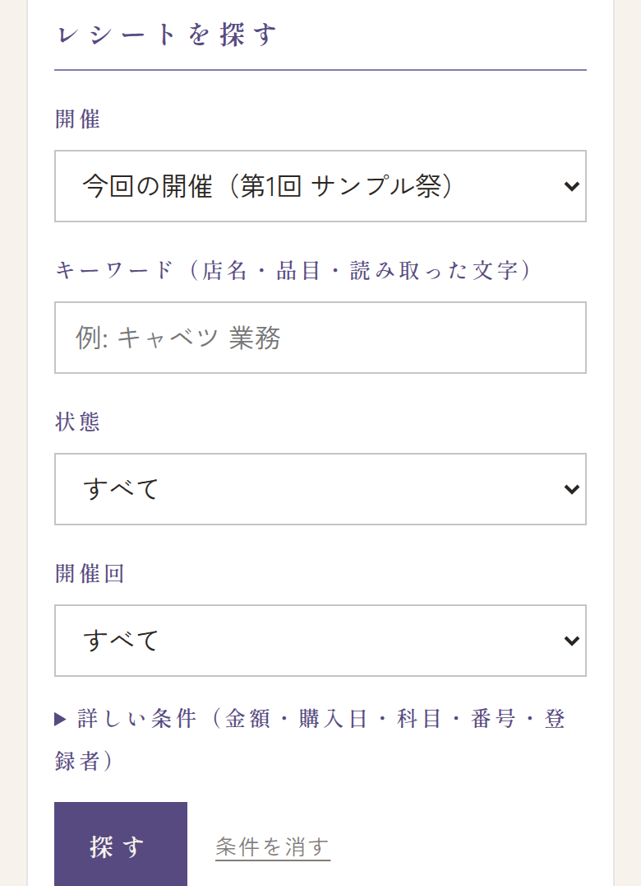
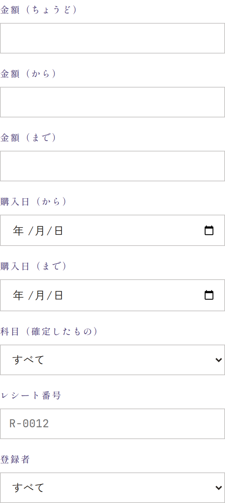
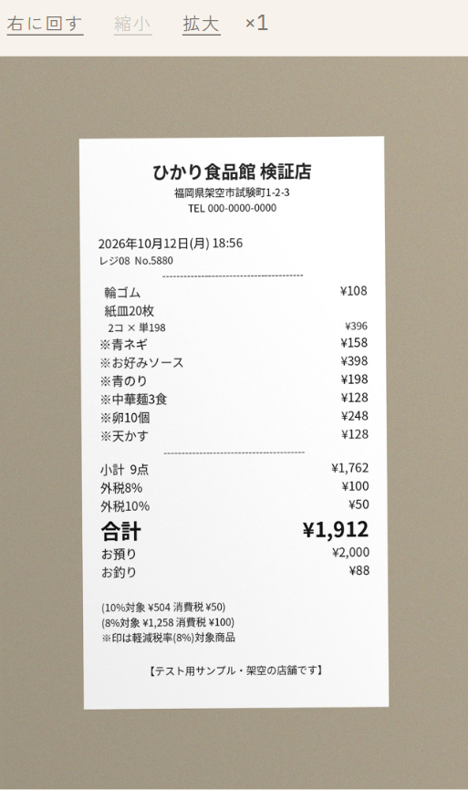
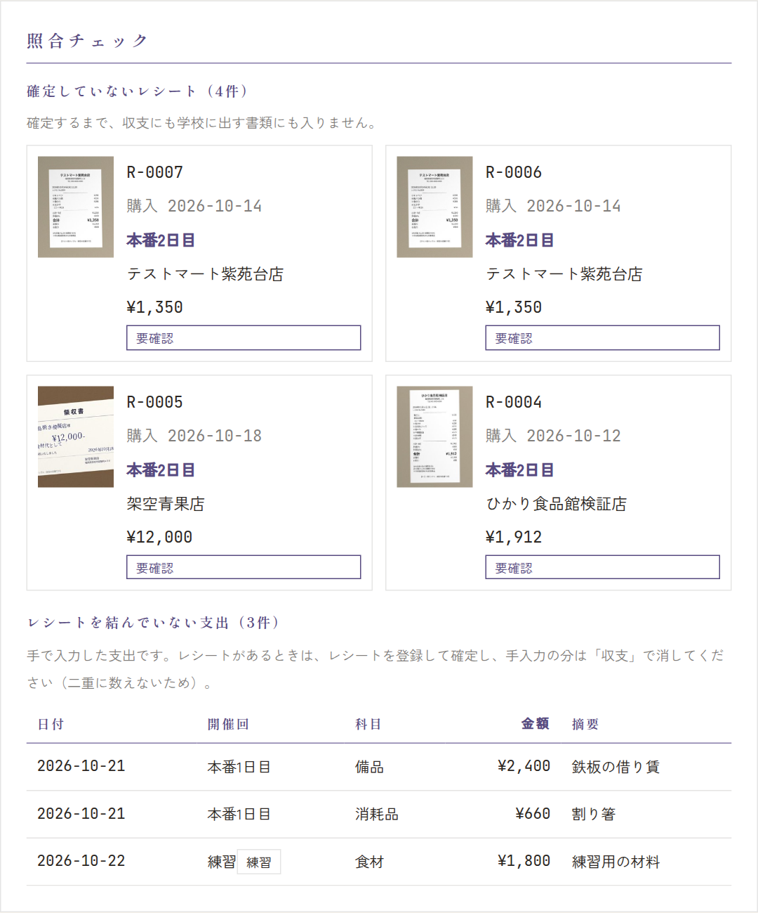

メニューの レシート の「レシートを探す」で、登録したレシートを探せます。その下の「照合チェック」で、確定し忘れ・二重の登録がないかを確かめます。
レシートを探す


- 開催: 最初は 今回の開催（…） です。すべての開催 や、前の開催も選べます。選ぶとすぐ一覧が変わります。
- キーワード: 店名・品目・読み取った文字から探します。空白で区切ると「ぜんぶ含むもの」です（例:
キャベツ 業務）。全角・半角、大文字・小文字の違いは気にしなくてかまいません（半角カナも見つかります）。 - 状態: 要確認・確定済み など。開催回: その日の分だけ。
- 条件を入れて 探す。条件を消す で最初に戻ります。新しい順に、100件まで出ます。
詳しい条件
「詳しい条件（金額・購入日・科目・番号・登録者）」を押すと開きます。


- 金額: ちょうどの金額か、範囲（から・まで）。確定前のレシートは、読み取った合計で探します。
- 購入日: 範囲で探します。
- 科目（確定したもの）: 確定したときの科目。税率ごとに分けたレシートは、どれかの行の科目が合えば出ます。
- レシート番号:
R-0012でも12でも探せます。 - 登録者: 「スタッフの画面から」を選ぶと、スタッフが送ったものだけ。
写真を拡大・回転する


一覧のレシートを押すと、写真が大きく開きます。拡大（3倍まで）・縮小・右に回す（90°ずつ）で見やすくできます。キーワードで探したときは、「読み取った文字」の中の探した言葉に印が付きます。
照合チェック


- 確定していないレシート: まだ確定していないレシートです。確定するまで、収支にも学校に出す書類にも入りません。押すと開くので、確かめて確定してください（→ 確認と確定）。
- レシートを結んでいない支出: 収支の画面で手で入れた支出です。その買い物のレシートがあるなら、レシートを送って確定し、手で入れた分は収支の画面で消してください（二重に数えないため）。レシートのない支出（借りた機材の代金など）は、そのままでかまいません。
学校に書類を出す前に、「確定していないレシート」が 0 件になっているか確かめてください。